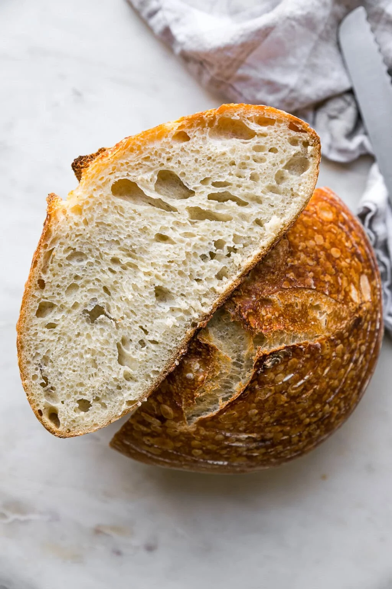

Sourdough Recipe

Ingredients
- 4 cups bread flour
- 1 tablespoon of yeast
- 1 teaspoon of salt
- 1 pinch of sugar
- 2 1/2 cups of warm water
Steps
- In a large bowl, add all ingredients together and mix.
- Cover bowl in a warm, dry place for 2 hours.
- After the dough is done resting, preheat oven to 450.
- Put your dutch oven in the oven while it is preheating to warm it up.
- Place dough on a floury surface and stretch and fold the dough.
- Once oven is preheated, removed dutch oven.
- Place dough on parchment paper in dutch oven.
- Bake for 30 minutes with the lid on, remove lid and bake for an additional 15 minutes.
- Let bread cool and enjoy!
Banana Bread Recipe

Ingredients
- 1/2 cup unsalted butter, softened
- 1 cup granulated sugar
- 2 large eggs
- 1 teaspoon vanilla extract
- 1 1/2 cups all-purpose flour
- 1 teaspoon baking soda
- 1/2 teaspoon salt
- 1/2 cup sour cream
- 3 medium overripe bananas, mashed
- 2 cups semisweet chocolate chips
Steps
- Preheat your oven to 350°F (175°C) and grease a 9x5-inch loaf pan.
- In a large mixing bowl, cream together the softened butter and granulated sugar until light and fluffy.
- Beat in the eggs, one at a time, followed by the vanilla extract, mixing well after each addition.
- In a separate bowl, whisk together the flour, baking soda, and salt.
- Gradually add the dry ingredients to the wet mixture, alternating with the sour cream, beginning and ending with the flour mixture.
- Fold in the mashed bananas and, if using, the chocoloate chips until just combined.
- Pour the batter into the prepared loaf pan and smooth the top.
- Bake for 60-70 minutes, or until a toothpick inserted into the center comes out clean.
- Let the banana loaf cool in the pan for 10 minutes before transferring to a wire rack to cool completely.